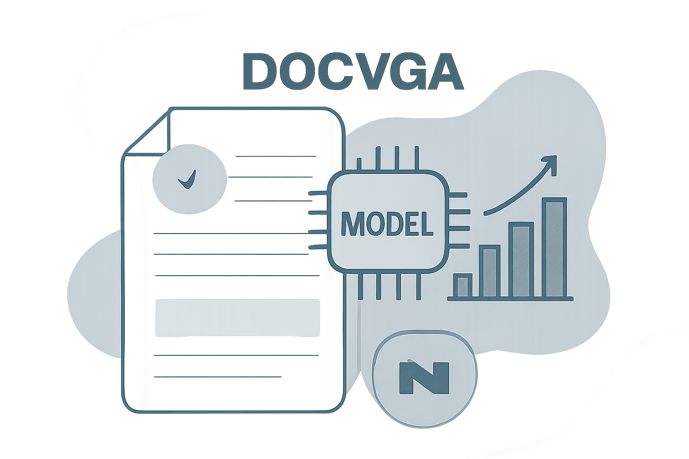

02 Hugging Face
OCR 없이 문서를 읽는 DocVQA 모델
mit 사내 사용 가능공개일 03.09

문서 질의응답은 OCR 의존도가 높으면 품질 편차가 커질 수 있다. 그래서 최근 후보 중에는 OCR 단계를 줄이거나 빼는 모델이 자주 보인다. 이 모델은 그 흐름에 놓인 DocVQA 파인튜닝본이다. 다만 카드 정보가 짧아 실무 판단에 필요한 빈칸이 많다.
무엇을 하는 모델인가
이 모델은 문서 이미지에서 질문의 답을 생성하는 문서 질의응답 모델이다. DocVQA 데이터셋으로 파인튜닝했다. 배포 설명은 OCR 없이 문서를 이해하는 Donut 계열이라고 소개한다. 카드 작성 주체는 배포 팀이 아니라 Hugging Face 팀이다.
크기와 필요한 장비
- 파라미터 수는 카드에 밝히지 않았다.
- transformers와 PyTorch 태그가 있다.
- 카드는 양자화본이나 다른 형식을 밝히지 않았다.
- 카드는 필요한 메모리를 밝히지 않았다.
- 문맥 길이와 입력 한도도 카드에 없다.
라이선스와 사내 반입
- 카드에 라이선스 조건을 밝히지 않았다.
- 상업 이용 가능 여부는 확인 필요다.
- 접근 승인 필요 여부도 카드에 밝히지 않았다.
- 재배포와 파생물 배포 조건 역시 확인 필요다.
한국어와 다국어
카드는 지원 언어를 밝히지 않았다. 한국어 예시나 한국어 평가는 없다. 모델 이름과 배포 주체만으로 한국어 지원을 단정할 수는 없다.
무엇으로 검증했나
카드는 평가 결과를 밝히지 않았다.
언제 이것을 고르나
OCR 단계를 줄인 후보가 필요하면 impira/layoutlm-document-qa보다 이 모델을 먼저 검토할 수 있다. 반대로 사내 도입 판단에 필요한 정보가 많이 필요하면 이 후보는 뒤로 미루는 편이 낫다. fxmarty/tiny-doc-qa-vision-encoder-decoder는 MIT 라이선스를 달고 있어 반입 검토가 더 빠를 수 있다. 이 모델은 라이선스와 장비 정보가 비어 있어 구매와 보안 검토가 먼저 막힐 수 있다.
주요 용어
원문 정보
제목: naver-clova-ix/donut-base-finetuned-docvqa
공개일: 2024.03.09
출처 URL: https://huggingface.co/naver-clova-ix/donut-base-finetuned-docvqa